<meta data-alternate="https://freshmark.sunisalex.org/en/" data-article="true" data-canonical="https://freshmark.sunisalex.org/posts/math/2027-strong-foundation-plan/09-plane-vectors/" data-description="整理《2027强基计划》第6章平面向量中的二十二道例题，涵盖向量条件的几何翻译、数量积几何化、重心及其推广和内积不等式。" data-freshmark-page data-title="[2027强基计划]平面向量 — Freshmark"><main><header class="container article-header"><a href="/" class="back-link">← 返回全部文章</a><p class="eyebrow article-subject">数学</p><h1>[2027强基计划]平面向量</h1><p class="article-dek">整理《2027强基计划》第6章平面向量中的二十二道例题，涵盖向量条件的几何翻译、数量积几何化、重心及其推广和内积不等式。</p><div class="article-meta"><time datetime="2026-08-02">2026年8月2日</time><span>10 分钟阅读</span><span>强基计划 · 数学竞赛</span><span class="view-count" data-article-view-count hidden>本文访问量 <strong data-article-views></strong></span><a href="index.md" download>下载 Markdown</a><button type="button" class="article-share" data-share-article data-share-text="整理《2027强基计划》第6章平面向量中的二十二道例题，涵盖向量条件的几何翻译、数量积几何化、重心及其推广和内积不等式。" data-share-title="[2027强基计划]平面向量"><span data-share-label>分享文章</span></button><output aria-live="polite" class="visually-hidden" data-share-status role="status"></output></div></header><div class="article-wrap"><aside class="toc"><div class="toc-head"><p>本文目录</p><button type="button" class="toc-toggle" aria-expanded="false" aria-label="展开或收起目录" data-toc-toggle><span class="toc-toggle-label">目录</span><span class="toc-toggle-icon" aria-hidden="true"></span></button></div><nav aria-label="目录" class="toc-links" data-toc-links><a href="#向量条件的几何翻译" class="toc-level-2">向量条件的几何翻译</a><a href="#例题-61" class="toc-level-3">例题 6.1</a><a href="#例题-62" class="toc-level-3">例题 6.2</a><a href="#例题-63" class="toc-level-3">例题 6.3</a><a href="#例题-64" class="toc-level-3">例题 6.4</a><a href="#数量积的几何化" class="toc-level-2">数量积的几何化</a><a href="#例题-65" class="toc-level-3">例题 6.5</a><a href="#例题-66" class="toc-level-3">例题 6.6</a><a href="#例题-67" class="toc-level-3">例题 6.7</a><a href="#例题-68" class="toc-level-3">例题 6.8</a><a href="#重心的向量刻画及其推广" class="toc-level-2">重心的向量刻画及其推广</a><a href="#例题-69" class="toc-level-3">例题 6.9</a><a href="#例题-610" class="toc-level-3">例题 6.10</a><a href="#例题-611" class="toc-level-3">例题 6.11</a><a href="#例题-612" class="toc-level-3">例题 6.12</a><a href="#命题背景" class="toc-level-2">命题背景</a><a href="#例题-613" class="toc-level-3">例题 6.13</a><a href="#例题-614" class="toc-level-3">例题 6.14</a><a href="#例题-615" class="toc-level-3">例题 6.15</a><a href="#例题-616" class="toc-level-3">例题 6.16</a><a href="#例题-617" class="toc-level-3">例题 6.17</a><a href="#内积不等式与高维视角" class="toc-level-2">内积不等式与高维视角</a><a href="#例题-618" class="toc-level-3">例题 6.18</a><a href="#例题-619" class="toc-level-3">例题 6.19</a><a href="#例题-620" class="toc-level-3">例题 6.20</a><a href="#例题-621" class="toc-level-3">例题 6.21</a><a href="#例题-622" class="toc-level-3">例题 6.22</a></nav></aside><article class="prose"><h2 id="向量条件的几何翻译">向量条件的几何翻译</h2><h3 id="例题-61">例题 6.1</h3><p>（浙江卷）已知 <span class="math-expression math-inline" data-math-source="\vec{a}"></span>，<span class="math-expression math-inline" data-math-source="\vec{b}"></span>，<span class="math-expression math-inline" data-math-source="\vec{e}"></span>&#32;是平面向量，<span class="math-expression math-inline" data-math-source="\vec{e}"></span>&#32;是单位向量。若非零向量 <span class="math-expression math-inline" data-math-source="\vec{a}"></span>&#32;与 <span class="math-expression math-inline" data-math-source="\vec{e}"></span>&#32;的夹角为 <span class="math-expression math-inline" data-math-source="\frac{\pi}{3}"></span>，向量 <span class="math-expression math-inline" data-math-source="\vec{b}"></span>&#32;满足</p><p><span class="math-expression math-display" data-math-source="|\vec{b}|^2-4\vec{e}\cdot\vec{b}+3=0," data-math-display></span></p><p>则 <span class="math-expression math-inline" data-math-source="|\vec{a}-\vec{b}|"></span>&#32;的最小值是（　　）</p><p><strong>A.</strong> <span class="math-expression math-inline" data-math-source="\sqrt3-1"></span></p><p>B. <span class="math-expression math-inline" data-math-source="\sqrt3+1"></span></p><p>C. <span class="math-expression math-inline" data-math-source="2"></span></p><p>D. <span class="math-expression math-inline" data-math-source="2-\sqrt3"></span></p><p>应当注意到因式分解: <span class="math-expression math-display" data-math-source="\begin{gathered} (\vec{b}-\vec{e})(\vec{b}-3\vec{e})=0 \end{gathered}" data-math-display></span></p><p>数形结合,考虑圆周上点到定直线上距离的最小值,选出A.</p><figure class="prose-figure">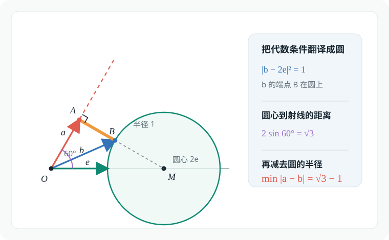<figcaption>例题 6.1 的向量几何翻译</figcaption></figure><h3 id="例题-62">例题 6.2</h3><p>已知向量 <span class="math-expression math-inline" data-math-source="\vec{a}"></span>，<span class="math-expression math-inline" data-math-source="\vec{b}"></span>&#32;满足</p><p><span class="math-expression math-display" data-math-source="|\vec{a}|=\sqrt3,
\qquad
|4\vec{a}+\vec{b}|+|\vec{b}|=8," data-math-display></span></p><p>则 <span class="math-expression math-inline" data-math-source="|2\vec{a}+\vec{b}|"></span>&#32;的取值范围是（　　）</p><p><strong>A.</strong> <span class="math-expression math-inline" data-math-source="[2,4]"></span></p><p>B. <span class="math-expression math-inline" data-math-source="[0,8]"></span></p><p>C. <span class="math-expression math-inline" data-math-source="[\sqrt3,8]"></span></p><p>D. <span class="math-expression math-inline" data-math-source="[4,16]"></span></p><p>不难发现,题中暗藏着<span class="math-expression math-inline" data-math-source="a=4,c=2\sqrt{3}.b=2"></span>的椭圆<span class="math-expression math-inline" data-math-source="\frac{x^2}{16}+\frac{y^2}{4}=1"></span>,所求<span class="math-expression math-inline" data-math-source="|2\vec{a}+\vec{b}|"></span>则是椭圆上点到中心的距离,则:</p><p><span class="math-expression math-display" data-math-source="\begin{gathered} x^2+4y^2=16,y\in[-2,+2]\\ d^2=x^2+y^2=(16-4y^2)+y^2\\ =16-3y^2\in[4,16]\\ d\in[2,4] \end{gathered}" data-math-display></span></p><figure class="prose-figure">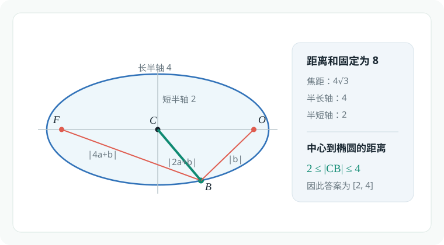<figcaption>例题 6.2 的椭圆模型</figcaption></figure><h3 id="例题-63">例题 6.3</h3><p>（北京大学）<span class="math-expression math-inline" data-math-source="\vec{OA}"></span>，<span class="math-expression math-inline" data-math-source="\vec{OB}"></span>&#32;的夹角为 <span class="math-expression math-inline" data-math-source="\theta"></span>，</p><p><span class="math-expression math-display" data-math-source="|\vec{OA}|=2,
\qquad
|\vec{OB}|=1," data-math-display></span></p><p><span class="math-expression math-display" data-math-source="\vec{OP}=t\vec{OA},
\qquad
\vec{OQ}=(1-t)\vec{OB}." data-math-display></span></p><p><span class="math-expression math-inline" data-math-source="|\vec{PQ}|"></span>&#32;在 <span class="math-expression math-inline" data-math-source="t=t_0"></span>&#32;时取得最小值。若 <span class="math-expression math-inline" data-math-source="0&lt;t_0&lt;\frac15"></span>，则 <span class="math-expression math-inline" data-math-source="\theta"></span>&#32;的取值范围为（　　）</p><p>A. <span class="math-expression math-inline" data-math-source="\left(\frac\pi3,\frac\pi2\right)"></span></p><p>B. <span class="math-expression math-inline" data-math-source="\left(\frac\pi3,\frac{2\pi}3\right)"></span></p><p>C. <span class="math-expression math-inline" data-math-source="\left(\frac\pi2,\frac{5\pi}6\right)"></span></p><p><strong>D.</strong> <span class="math-expression math-inline" data-math-source="\left(\frac\pi2,\frac{2\pi}3\right)"></span></p><p>先考虑代数方法,构建目标函数: <span class="math-expression math-display" data-math-source="\begin{gathered} |\vec{PQ}|=|\vec{OQ}-\vec{OP}|\\ =\sqrt{|\vec{OQ}|^2+|\vec{OP}|^2-2|\vec{OQ}||\vec{OP}|\cos\theta}\\ =\sqrt{(1-t)^2+(2t)^2-2\cdot(1-t)\cdot (2t)\cos\theta}\\ =\sqrt{(5+4\cos\theta)t^2-2(2\cos\theta+1)t+1},t\in \mathbb{R}\\ t_0=\frac{2\cos\theta+1}{5+4\cos\theta}\in(0,\frac15)\\ \cos\theta\in(-\frac12,0),\theta\in[0,\pi]\\ \Longleftrightarrow \theta\in(\frac{\pi}{2},\frac{2\pi}{3}) \end{gathered}" data-math-display></span></p><p>当然,我们自有巧妙的几何法:</p><p>作平行四边形<span class="math-expression math-inline" data-math-source="OACB"></span>,过点<span class="math-expression math-inline" data-math-source="P"></span>作<span class="math-expression math-inline" data-math-source="PM\parallel OB"></span>交<span class="math-expression math-inline" data-math-source="OC"></span>与点<span class="math-expression math-inline" data-math-source="M"></span>,则<span class="math-expression math-inline" data-math-source="PM\parallel BQ"></span>且<span class="math-expression math-inline" data-math-source="|PM|=|BQ|=t"></span>,又出现了一个平行四边形<span class="math-expression math-inline" data-math-source="PMBQ"></span>.</p><p>所求<span class="math-expression math-inline" data-math-source="|PQ|=|BM|"></span>,当<span class="math-expression math-inline" data-math-source="|BM|"></span>最短,即<span class="math-expression math-inline" data-math-source="BM\perp OC"></span>时,<span class="math-expression math-inline" data-math-source="|PQ|"></span>取得最小值.</p><p>作<span class="math-expression math-inline" data-math-source="BH\perp OC"></span>,须知<span class="math-expression math-inline" data-math-source="t_0=\frac{|OP|}{|OA|}=\frac{|OH|}{|OC|}"></span>.</p><p>对直角三角形<span class="math-expression math-inline" data-math-source="OHB,CHB"></span>使用勾股定理: <span class="math-expression math-display" data-math-source="\begin{gathered} \begin{cases} OH^2+HB^2=OB^2=1,\\ CH^2+HB^2=BC^2=4 \end{cases}\\ CH^2-OH^2=3\\ (OC-OH)^2-OH^2=3\\ OC^2-2OC\cdot OH=3\\ OC^2(1-2t_0)=3\\ OC^2=\frac{3}{1-2t_0}\in(3,5)\\ OC^2=OB^2+BC^2-2OB\cdot OC\cos(\pi-\theta)\\ =5+4\cos\theta\\ \cos\theta\in(-\frac{1}{2},0)\Longleftrightarrow \theta\in(\frac{\pi}{2},\frac{2\pi}{3}) \end{gathered}" data-math-display></span></p><figure class="prose-figure">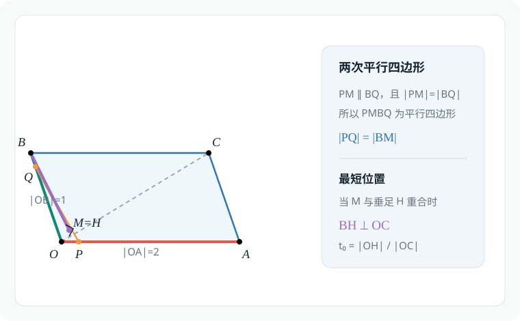<figcaption>例题 6.3 的平行四边形构造</figcaption></figure><h3 id="例题-64">例题 6.4</h3><p>在直角三角形 <span class="math-expression math-inline" data-math-source="\triangle ABC"></span>&#32;中，<span class="math-expression math-inline" data-math-source="AB=4"></span>，<span class="math-expression math-inline" data-math-source="AC=3"></span>，<span class="math-expression math-inline" data-math-source="\angle A=\frac\pi2"></span>，</p><p><span class="math-expression math-display" data-math-source="\vec{AP}=m\vec{PB},
\qquad
\vec{AQ}=n\vec{QC},
\qquad
\frac1m+\frac1n=\frac12." data-math-display></span></p><p><span class="math-expression math-inline" data-math-source="M"></span>&#32;是 <span class="math-expression math-inline" data-math-source="BC"></span>&#32;的中点。对任意 <span class="math-expression math-inline" data-math-source="\lambda\in\mathbb R"></span>，</p><p><span class="math-expression math-display" data-math-source="\left|\lambda\vec{QP}+\vec{QM}\right|" data-math-display></span></p><p>的最小值记为 <span class="math-expression math-inline" data-math-source="f(m)"></span>，则当 <span class="math-expression math-inline" data-math-source="m&gt;0"></span>&#32;时，<span class="math-expression math-inline" data-math-source="f(m)"></span>&#32;的最大值为 <span class="math-expression math-inline" data-math-source="\underline{\qquad}"></span>。</p><p><span class="math-expression math-display" data-math-source="\begin{gathered} \vec{AB}=\vec{AP}+\vec{PB}=\frac{m+1}{m}\vec{AP}\\ \vec{AC}=\vec{AQ}+\vec{QC}=\frac{n+1}{n}\vec{AQ}\\ \vec{AB}+\vec{AC}=(1+\frac1m)\vec{AP}+(1+\frac1n)\vec{AQ}\\ (1+\frac1m)+(1+\frac1n)=\frac{5}{2}\\ \frac{2}{5}[(1+\frac1m)\vec{AP}+(1+\frac1n)\vec{AQ}]=\frac{2}{5}(\vec{AB}+\vec{AC})=\frac{4}{5}\vec{AM}\\ \end{gathered}" data-math-display></span></p><p>这意味着如果取T点,使得<span class="math-expression math-inline" data-math-source="\frac{AT}{AM}=\frac{4}{5}"></span>,则有<span class="math-expression math-inline" data-math-source="P,Q,T"></span>三点共线.</p><p><span class="math-expression math-inline" data-math-source="\min_{\lambda\in\mathbb{R}}\left|\lambda\vec{QP}+\vec{QM}\right|"></span>等于直线<span class="math-expression math-inline" data-math-source="PQ"></span>到点M的距离,构建不等式: <span class="math-expression math-display" data-math-source="\begin{gathered} \min_{\lambda\in\mathbb{R}}\left|\lambda\vec{QP}+\vec{QM}\right|\\ =d(M,PQ)\\ \leq |TM|\\ =\frac{1}{5}|AM|=\frac{1}{5}\cdot\frac{5}{2}=\frac{1}{2} \end{gathered}" data-math-display></span></p><figure class="prose-figure">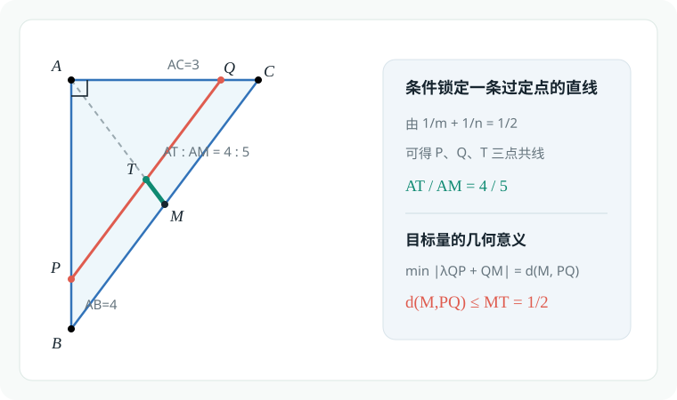<figcaption>例题 6.4 的定比分点构型</figcaption></figure><h2 id="数量积的几何化">数量积的几何化</h2><blockquote><p><strong>极化恒等式</strong>:在<span class="math-expression math-inline" data-math-source="\triangle ABC"></span>中,<span class="math-expression math-inline" data-math-source="M"></span>为边<span class="math-expression math-inline" data-math-source="BC"></span>中点,则: <span class="math-expression math-inline" data-math-source="\vec{AB}\cdot\vec{AC}=(\vec{AM}+\vec{MB})(\vec{AM}-\vec{MB})=|AM|^2-|MB|^2"></span></p></blockquote><h3 id="例题-65">例题 6.5</h3><p>（清华大学）在 <span class="math-expression math-inline" data-math-source="\triangle ABC"></span>&#32;中，<span class="math-expression math-inline" data-math-source="AC=BC"></span>，<span class="math-expression math-inline" data-math-source="P_1"></span>，<span class="math-expression math-inline" data-math-source="P_2"></span>，<span class="math-expression math-inline" data-math-source="P_3"></span>&#32;为 <span class="math-expression math-inline" data-math-source="AB"></span>&#32;上的点，且</p><p><span class="math-expression math-display" data-math-source="P_1B=\frac12P_2B=\frac14P_3B=\frac18AB." data-math-display></span></p><p>设</p><p><span class="math-expression math-display" data-math-source="I_k=\vec{P_kB}\cdot\vec{P_kC}
\qquad(k=1,2,3)," data-math-display></span></p><p>则（　　）</p><p>A. <span class="math-expression math-inline" data-math-source="I_1&lt;I_2&lt;I_3"></span></p><p>B. <span class="math-expression math-inline" data-math-source="I_1&lt;I_3&lt;I_2"></span></p><p>C. <span class="math-expression math-inline" data-math-source="I_3&lt;I_2&lt;I_1"></span></p><p><strong>D.</strong> <span class="math-expression math-inline" data-math-source="I_2&lt;I_1&lt;I_3"></span></p><p>由几何关系,<span class="math-expression math-inline" data-math-source="P_1,P_2,P_3"></span>都是<span class="math-expression math-inline" data-math-source="AB"></span>上的八等分点.</p><p>取<span class="math-expression math-inline" data-math-source="BC"></span>中点<span class="math-expression math-inline" data-math-source="M"></span>,考虑极化恒等式<span class="math-expression math-inline" data-math-source="I_k=\vec{P_kB}\cdot\vec{P_kC}=|P_kM|^2-|BM|^2(k=1,2,3)"></span>,其中<span class="math-expression math-inline" data-math-source="|BM|"></span>为一定值.</p><p>由图形比例:<span class="math-expression math-inline" data-math-source="|P_3M|&gt;|P_1M|&gt;|P_2M|\Longleftrightarrow I_2&lt; I_1&lt; I_3"></span></p><figure class="prose-figure">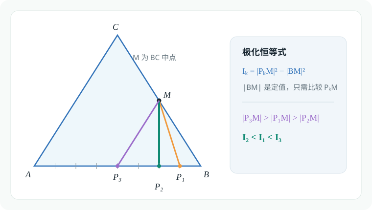<figcaption>例题 6.5 的极化恒等式构型</figcaption></figure><h3 id="例题-66">例题 6.6</h3><p>在 <span class="math-expression math-inline" data-math-source="\triangle ABC"></span>&#32;中，<span class="math-expression math-inline" data-math-source="P_0"></span>&#32;是边 <span class="math-expression math-inline" data-math-source="AB"></span>&#32;上一定点，满足</p><p><span class="math-expression math-display" data-math-source="P_0B=\frac14AB," data-math-display></span></p><p>且对于边 <span class="math-expression math-inline" data-math-source="AB"></span>&#32;上任意一点 <span class="math-expression math-inline" data-math-source="P"></span>，恒有</p><p><span class="math-expression math-display" data-math-source="\vec{PB}\cdot\vec{PC}
\geq
\vec{P_0B}\cdot\vec{P_0C}," data-math-display></span></p><p>则（　　）</p><p>A. <span class="math-expression math-inline" data-math-source="\angle ABC=90^\circ"></span></p><p>B. <span class="math-expression math-inline" data-math-source="\angle BAC=90^\circ"></span></p><p>C. <span class="math-expression math-inline" data-math-source="AB=AC"></span></p><p><strong>D.</strong> <span class="math-expression math-inline" data-math-source="AC=BC"></span></p><p><span class="math-expression math-display" data-math-source="\begin{gathered} \vec{PB}\cdot\vec{PC}=|PM|^2-|BM|^2\\ \geq \vec{P_0B}\cdot\vec{P_0}=|P_0M|^2-|BM|^2 \end{gathered}" data-math-display></span></p><p>这表明<span class="math-expression math-inline" data-math-source="P_0M"></span>是最短线段,<span class="math-expression math-inline" data-math-source="P_0M\perp AB"></span>.又注意到如果取<span class="math-expression math-inline" data-math-source="AB"></span>中点<span class="math-expression math-inline" data-math-source="T"></span>,则<span class="math-expression math-inline" data-math-source="TM"></span>为<span class="math-expression math-inline" data-math-source="\triangle ABC"></span>中<span class="math-expression math-inline" data-math-source="AC"></span>所对中位线,则<span class="math-expression math-inline" data-math-source="CT\perp P_0M \Longrightarrow CT\perp AB"></span>.</p><p>根据三线合一,<span class="math-expression math-inline" data-math-source="AC=BC"></span>,则D正确,AB均错误.</p><p>若将<span class="math-expression math-inline" data-math-source="\triangle ABC"></span>延<span class="math-expression math-inline" data-math-source="CT"></span>方向拉长,则仍满足题目条件,但选项C不一定正确,故选D</p><figure class="prose-figure">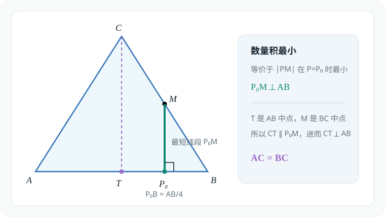<figcaption>例题 6.6 的中点与垂线构型</figcaption></figure><h3 id="例题-67">例题 6.7</h3><p>（清华大学）向量 <span class="math-expression math-inline" data-math-source="\vec{a}\ne\vec{e}"></span>，<span class="math-expression math-inline" data-math-source="|\vec{e}|=1"></span>。若对任意 <span class="math-expression math-inline" data-math-source="t\in\mathbb R"></span>，都有</p><p><span class="math-expression math-display" data-math-source="|\vec{a}-t\vec{e}|\geq|\vec{a}+\vec{e}|," data-math-display></span></p><p>则（　　）</p><p>A. <span class="math-expression math-inline" data-math-source="\vec{a}\perp\vec{e}"></span></p><p>B. <span class="math-expression math-inline" data-math-source="\vec{a}\perp(\vec{a}+\vec{e})"></span></p><p><strong>C.</strong> <span class="math-expression math-inline" data-math-source="\vec{e}\perp(\vec{a}+\vec{e})"></span></p><p>D. <span class="math-expression math-inline" data-math-source="(\vec{a}-\vec{e})\perp(\vec{a}+\vec{e})"></span></p><p>将向量<span class="math-expression math-inline" data-math-source="\vec{a}\ne\vec{e}"></span>平移至共起点,可知题目条件本质为<span class="math-expression math-inline" data-math-source="\vec{e}\perp(\vec{a}+\vec{e})"></span></p><figure class="prose-figure">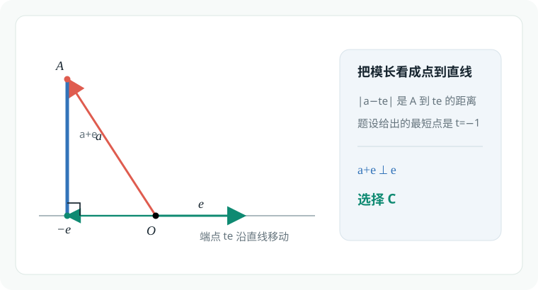<figcaption>例题 6.7 的向量投影图</figcaption></figure><h3 id="例题-68">例题 6.8</h3><p>在 <span class="math-expression math-inline" data-math-source="\triangle ABC"></span>&#32;中：</p><ol><li><p>若 <span class="math-expression math-inline" data-math-source="\vec{CA}=\vec{a}"></span>，<span class="math-expression math-inline" data-math-source="\vec{CB}=\vec{b}"></span>，求证：</p><p><span class="math-expression math-display" data-math-source="S_{\triangle ABC}
   =\frac12\sqrt{(|\vec{a}||\vec{b}|)^2-(\vec{a}\cdot\vec{b})^2}." data-math-display></span></p></li><li><p>若 <span class="math-expression math-inline" data-math-source="\vec{CA}=(x_1,y_1)"></span>，<span class="math-expression math-inline" data-math-source="\vec{CB}=(x_2,y_2)"></span>，求证：</p><p><span class="math-expression math-display" data-math-source="S_{\triangle ABC}=\frac12|x_1y_2-x_2y_1|." data-math-display></span></p></li></ol><p><span class="math-expression math-display" data-math-source="\begin{gathered} S_{\triangle ABC}=\frac{1}{2}|\vec{a}||\vec{b}|\sin\langle\vec{a},\vec{b}\rangle\\ =\frac{1}{2}|\vec{a}||\vec{b}|\sqrt{1-\cos^2\langle\vec{a},\vec{b}\rangle}\\ =\frac{1}{2}|\vec{a}||\vec{b}|\sqrt{1-(\frac{\vec{a}\cdot\vec{b}}{|\vec{a}||\vec{b}|})^2}\\ =\frac{1}{2}\sqrt{|\vec{a}|^2|\vec{b}|^2-(\vec{a}\cdot\vec{b})^2}\\ =\frac{1}{2}\sqrt{(x_1^2+y_1^2)(x_2^2+y_2^2)-(x_1x_2+y_1y_2)^2}\\ =\frac{1}{2}\sqrt{(x_1y_2-x_2y_1)^2}=\frac12|x_1y_2-x_2y_1| \end{gathered}" data-math-display></span></p><figure class="prose-figure">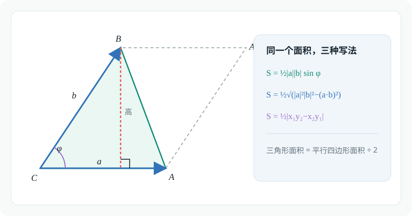<figcaption>例题 6.8 的向量面积图</figcaption></figure><h2 id="重心的向量刻画及其推广">重心的向量刻画及其推广</h2><h3 id="例题-69">例题 6.9</h3><p><span class="math-expression math-inline" data-math-source="\triangle ABC"></span>&#32;的重心为点 <span class="math-expression math-inline" data-math-source="M"></span>，过点 <span class="math-expression math-inline" data-math-source="M"></span>&#32;的直线分别交 <span class="math-expression math-inline" data-math-source="AB"></span>，<span class="math-expression math-inline" data-math-source="AC"></span>&#32;于点 <span class="math-expression math-inline" data-math-source="E"></span>，<span class="math-expression math-inline" data-math-source="F"></span>。若</p><p><span class="math-expression math-display" data-math-source="AE=kAB,
\qquad
AF=hAC," data-math-display></span></p><p>利用向量证明：</p><p><span class="math-expression math-display" data-math-source="\frac1k+\frac1h=3." data-math-display></span></p><p><span class="math-expression math-display" data-math-source="\begin{gathered} \vec{AB}+\vec{AC}=3\vec{AM}\\ \frac{1}{3k}\vec{AE}+\frac{1}{3h}\vec{AF}=\vec{AM} \end{gathered}" data-math-display></span> 由于点<span class="math-expression math-inline" data-math-source="E,F,M"></span>共线,则<span class="math-expression math-inline" data-math-source="\frac{1}{3k}+\frac{1}{3h}=1"></span>,故<span class="math-expression math-inline" data-math-source="\frac1k+\frac1h=3"></span></p><figure class="prose-figure">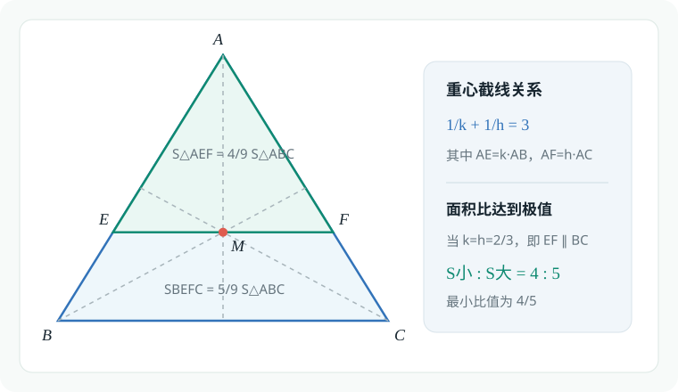<figcaption>例题 6.9 与 6.10 的重心截线图</figcaption></figure><h3 id="例题-610">例题 6.10</h3><p>过 <span class="math-expression math-inline" data-math-source="\triangle ABC"></span>&#32;的重心作一条直线，将 <span class="math-expression math-inline" data-math-source="\triangle ABC"></span>&#32;分成两部分，则较小部分与较大部分的面积之比（　　）</p><p>A. 最小值为 <span class="math-expression math-inline" data-math-source="\frac34"></span></p><p><strong>B.</strong> 最小值为 <span class="math-expression math-inline" data-math-source="\frac45"></span></p><p>C. 最大值为 <span class="math-expression math-inline" data-math-source="\frac43"></span></p><p>D. 最大值为 <span class="math-expression math-inline" data-math-source="\frac54"></span></p><p>本题的几何图形与例6.9师出同门,应考虑结论: <span class="math-expression math-display" data-math-source="\begin{gathered} \frac{S_{\triangle ABC}}{S_{\triangle AEF}}=\frac{AB}{AE}\frac{AC}{AF}=\frac{1}{k}\cdot\frac{1}{h}\leq(\frac{\frac{1}{k}+\frac{1}{h}}{2})^2=\frac94 \end{gathered}" data-math-display></span></p><p>当然,我们还需要确定<span class="math-expression math-inline" data-math-source="\frac{S_{\triangle ABC}}{S_{\triangle AEF}}"></span>的下界: <span class="math-expression math-display" data-math-source="\begin{gathered} 0&lt; h,k\leq1\Longrightarrow (\frac{1}{k}-1)(\frac{1}{h}-1)\geq0\\ \frac{1}{kh}\geq \frac{1}{h}+\frac{1}{k}-1=2\\ \frac{S_{\triangle ABC}}{S_{\triangle AEF}}\in[2,\frac{9}{4}]\\ S_{BEFC}\geq S_{\triangle{AEF}}\\ \frac{S_{\triangle AEF}+S_{BEFC}}{S_{\triangle AEF}}=1+\frac{S_{BEFC}}{S_{\triangle AEF}}\\ \frac{S_{BEFC}}{S_{\triangle AEF}}\in[1,\frac{5}{4}]\\ \frac{S_{\triangle AEF}}{S_{BEFC}}\in[\frac{4}{5},1] \end{gathered}" data-math-display></span></p><h3 id="例题-611">例题 6.11</h3><p>设 <span class="math-expression math-inline" data-math-source="P_1,P_2,\ldots,P_n"></span>&#32;是单位圆 <span class="math-expression math-inline" data-math-source="O"></span>&#32;内接正 <span class="math-expression math-inline" data-math-source="n"></span>&#32;边形的顶点，<span class="math-expression math-inline" data-math-source="P"></span>&#32;是圆 <span class="math-expression math-inline" data-math-source="O"></span>&#32;上的任意点，则</p><p><span class="math-expression math-display" data-math-source="PP_1^2+PP_2^2+\cdots+PP_n^2=" data-math-display></span></p><p>（　　）</p><p>A. <span class="math-expression math-inline" data-math-source="0"></span></p><p>B. <span class="math-expression math-inline" data-math-source="1"></span></p><p>C. <span class="math-expression math-inline" data-math-source="n"></span></p><p><strong>D. 前三个答案都不对</strong></p><p><span class="math-expression math-display" data-math-source="\begin{gathered} PP_1^2+PP_2^2+\cdots+PP_n^2\\ =\sum_{i=1}^n(\vec{OP}-\vec{OO_i})^2\\ =n(|OP|^2+R)^2-2\vec{OP}(\sum_{i=1}^nOO_i)\\ =2n-2\vec{OP}\cdot\vec{0} \end{gathered}" data-math-display></span></p><figure class="prose-figure">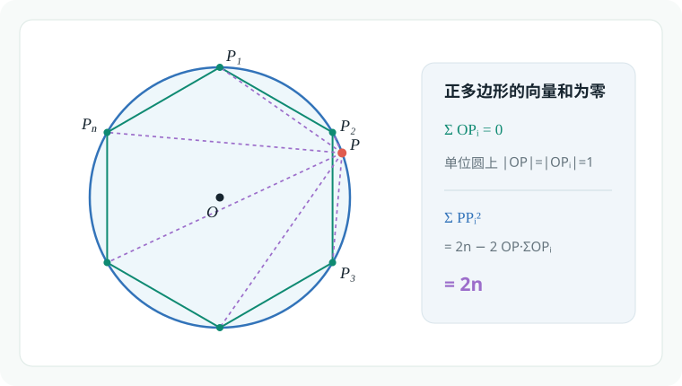<figcaption>例题 6.11 的单位圆点系图</figcaption></figure><h3 id="例题-612">例题 6.12</h3><p>（北京大学）单位圆的内接五边形的所有边及所有对角线的长度的平方和的最大值为（　　）</p><p>A. <span class="math-expression math-inline" data-math-source="15"></span></p><p>B. <span class="math-expression math-inline" data-math-source="20"></span></p><p><strong>C.</strong> <span class="math-expression math-inline" data-math-source="25"></span></p><p>D. 前三个答案都不对</p><p>见微知著,我们从<span class="math-expression math-inline" data-math-source="n=3"></span>的情况开始研究.</p><p>在平面直角坐标系中,有三角形<span class="math-expression math-inline" data-math-source="ABC"></span>,考虑三条边的平方和: <span class="math-expression math-display" data-math-source="\begin{gathered} AB^2+BC^2+CA^2\\ =\sum_{\mathrm{cyc}}[(x_1-x_2)^2+(y_1-y_2)^2]\\ =2\sum_{\mathrm{cyc}}(x_1^2+y_1^2)-2\sum_{\mathrm{cyc}}(x_1x_2+y_1y_2) \end{gathered}" data-math-display></span> 对于<span class="math-expression math-inline" data-math-source="2\sum_{\mathrm{cyc}}(x_1x_2+y_1y_2)"></span>,我们注意到其交叉项的形式: <span class="math-expression math-display" data-math-source="\begin{gathered} (x_1+x_2+x_3)^2=\sum_{\mathrm{cyc}}x_1^2+2\sum_{\mathrm{cyc}}(x_1x_2)\\ (y_1+y_2+y_3)^2=\sum_{\mathrm{cyc}}y_1^2+2\sum_{\mathrm{cyc}}(y_1y_2)\\ 2\sum_{\mathrm{cyc}}(x_1x_2+y_1y_2)=(x_1+x_2+x_3)^2+(y_1+y_2+y_3)^2-\sum_{\mathrm{cyc}}(x_1^2+y_1^2) \end{gathered}" data-math-display></span> 于是: <span class="math-expression math-display" data-math-source="\begin{gathered} AB^2+BC^2+CA^2\\=3\sum_{\mathrm{cyc}}(x_1^2+y_1^2)-(x_1+x_2+x_3)^2-(y_1+y_2+y_3)^2\\\geq3\sum_{\mathrm{cyc}}(x_1^2+y_1^2) \end{gathered}" data-math-display></span></p><p>显而易见,对于五边形的情况,只是系数不同: <span class="math-expression math-display" data-math-source="\begin{gathered} =\sum_{\mathrm{cyc}}[(x_1-x_2)^2+(y_1-y_2)^2]\\ =\textcolor{red}{3}\sum_{\mathrm{cyc}}(x_1^2+y_1^2)-2\sum_{\mathrm{cyc}}(x_1x_2+y_1y_2) \end{gathered}" data-math-display></span></p><p><span class="math-expression math-display" data-math-source="\begin{gathered} \sum_{\mathrm{cyc}}[(x_1-x_2)^2+(y_1-y_2)^2]\geq 5\sum_{\mathrm{cyc}}(x_1^2+y_1^2)\\ =5\cdot 5\cdot 1=25 \end{gathered}" data-math-display></span></p><p><strong>更正（Claude 补充）</strong></p><blockquote><p>本节由 Claude（Anthropic 开发的 AI 模型）补充，附在作者解答之后，并非原作者所写。</p></blockquote><p>答案 <span class="math-expression math-inline" data-math-source="25"></span>&#32;正确，但上面两处不等号方向反了：减去一个平方项只能得到<strong>上界</strong>。<span class="math-expression math-inline" data-math-source="n"></span>&#32;个点的一般恒等式是</p><p><span class="math-expression math-display" data-math-source="\sum_{i&lt;j}|P_iP_j|^2=n\sum_{i}|OP_i|^2-\Bigl|\sum_i\overrightarrow{OP_i}\Bigr|^2\le n\sum_i|OP_i|^2 ," data-math-display></span></p><p>对五边形，每个点出现在 <span class="math-expression math-inline" data-math-source="4"></span>&#32;对中，所以红色系数应为 <span class="math-expression math-inline" data-math-source="4"></span>（<span class="math-expression math-inline" data-math-source="4\sum|OP_i|^2-2\sum_{i&lt;j}\overrightarrow{OP_i}\cdot\overrightarrow{OP_j}=5\sum|OP_i|^2-|\sum\overrightarrow{OP_i}|^2"></span>）。于是平方和 <span class="math-expression math-inline" data-math-source="\le5\cdot5=25"></span>，当 <span class="math-expression math-inline" data-math-source="\sum\overrightarrow{OP_i}=\vec0"></span>（例如正五边形）时取等，最大值为 <span class="math-expression math-inline" data-math-source="25"></span>。三角形的情形同理应为 <span class="math-expression math-inline" data-math-source="AB^2+BC^2+CA^2\le3\sum(x_i^2+y_i^2)"></span>。</p><figure class="prose-figure">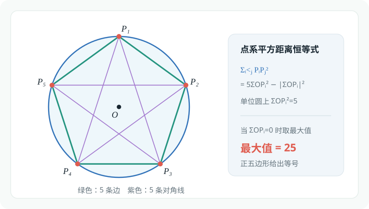<figcaption>例题 6.12 的单位圆内接五边形</figcaption></figure><h2 id="命题背景">命题背景</h2><table><thead><tr><th style="text-align:left">公式</th><th style="text-align:left">建议名称</th></tr></thead><tbody><tr><td style="text-align:left"><span class="math-expression math-inline" data-math-source="\displaystyle \sum_{i&lt;j} P_iP_j^2=n\sum OP_i^2-\left\lVert\sum\vec{OP_i}\right\rVert^2"></span></td><td style="text-align:left">点系平方距离恒等式</td></tr><tr><td style="text-align:left"><span class="math-expression math-inline" data-math-source="\displaystyle \sum_{i&lt;j} P_iP_j^2=n\sum GP_i^2"></span></td><td style="text-align:left">点系恒等式的重心形式</td></tr><tr><td style="text-align:left"><span class="math-expression math-inline" data-math-source="\displaystyle \sum PP_i^2=\frac{1}{n}\sum_{i&lt;j}P_iP_j^2+nPG^2"></span></td><td style="text-align:left">广义莱布尼茨定理</td></tr></tbody></table><h3 id="例题-613">例题 6.13</h3><p>（清华大学）<span class="math-expression math-inline" data-math-source="O"></span>&#32;为 <span class="math-expression math-inline" data-math-source="\triangle ABC"></span>&#32;内一点，若</p><p><span class="math-expression math-display" data-math-source="S_{\triangle AOB}:S_{\triangle BOC}:S_{\triangle AOC}=4:3:2," data-math-display></span></p><p>设</p><p><span class="math-expression math-display" data-math-source="\vec{AO}
=\lambda\vec{AB}+\mu\vec{AC}," data-math-display></span></p><p>则实数 <span class="math-expression math-inline" data-math-source="\lambda"></span>&#32;和 <span class="math-expression math-inline" data-math-source="\mu"></span>&#32;的值分别为（　　）</p><p><strong>A. <span class="math-expression math-inline" data-math-source="\frac29,\frac49"></span></strong></p><p>B. <span class="math-expression math-inline" data-math-source="\frac49,\frac29"></span></p><p>C. <span class="math-expression math-inline" data-math-source="\frac19,\frac29"></span></p><p>D. <span class="math-expression math-inline" data-math-source="\frac29,\frac19"></span></p><p>由熟知的奔驰定理: <span class="math-expression math-display" data-math-source="\begin{gathered} 4\vec{OC}+3\vec{OA}+2\vec{OB}=\vec{0}\\ 4(\vec{AC}-\vec{AO})-3\vec{AO}+2(\vec{AB}-\vec{AO})=\vec{0}\\ 9\vec{AO}=2\vec{AB}+4\vec{AC}\\ \lambda=\frac{2}{9},\mu=\frac{4}{9} \end{gathered}" data-math-display></span></p><p>该结论可以通过构造重心来证明,此处不加赘述.</p><figure class="prose-figure">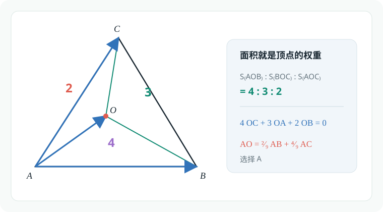<figcaption>例题 6.13 的面积权重与奔驰定理</figcaption></figure><h3 id="例题-614">例题 6.14</h3><p>（清华大学）<span class="math-expression math-inline" data-math-source="\triangle ABC"></span>&#32;中，<span class="math-expression math-inline" data-math-source="AB=2"></span>，<span class="math-expression math-inline" data-math-source="AC=3"></span>，<span class="math-expression math-inline" data-math-source="BC=4"></span>，<span class="math-expression math-inline" data-math-source="O"></span>&#32;为三角形内心。若</p><p><span class="math-expression math-display" data-math-source="\vec{AO}
=\lambda\vec{AB}+\mu\vec{BC}," data-math-display></span></p><p>则 <span class="math-expression math-inline" data-math-source="3\lambda+6\mu="></span>（　　）</p><p>A. <span class="math-expression math-inline" data-math-source="1"></span></p><p>B. <span class="math-expression math-inline" data-math-source="2"></span></p><p><strong>C. <span class="math-expression math-inline" data-math-source="3"></span></strong></p><p>D. <span class="math-expression math-inline" data-math-source="4"></span></p><p>对于内心,由内分三角形比,有结论: <span class="math-expression math-display" data-math-source="\begin{gathered} a\vec{OA}+b\vec{OB}+c\vec{OC}=\vec{0}\\ 4\vec{OA}+3\vec{OB}+2\vec{OC}=\vec{0}\\ -4\vec{AO}+3(\vec{AB}-\vec{AO})+2(-\vec{AO}+\vec{AB}+\vec{BC})=\vec{0}\\ 9\vec{AO}=5\vec{AB}+2\vec{BC}\\ \lambda=\frac{5}{9},\mu=\frac{2}{9}\\ 3\lambda+6\mu=\frac{5}{3}+\frac{4}{3}=3 \end{gathered}" data-math-display></span></p><p>或者考虑内心对应角平分线的性质:<span class="math-expression math-inline" data-math-source="AB,AC"></span>方向的单位向量的矢量和与<span class="math-expression math-inline" data-math-source="\vec{AO}"></span>同向共线: <span class="math-expression math-display" data-math-source="\begin{gathered} m(\frac{\vec{AB}}{2}+\frac{\vec{AC}}{3})=\vec{AO} \end{gathered}" data-math-display></span></p><p>我们可以通过向量长度确定<span class="math-expression math-inline" data-math-source="m"></span>.作<span class="math-expression math-inline" data-math-source="OH\perp AB"></span>与点<span class="math-expression math-inline" data-math-source="H"></span>,则: <span class="math-expression math-display" data-math-source="\begin{gathered} S_{\triangle ABC}=\sqrt{p(p-a)(p-b)(p-c)}\\=\sqrt{\frac{9}{2}\cdot\frac{1}{2}\cdot\frac{3}{2}\cdot\frac{5}{2}}=\frac{3}{4}\sqrt{15}\\=rp=\frac{9}{2}r\\ r=\frac{1}{6}\sqrt{15},AH=p-a=\frac{1}{2}\\ |\vec{AO}|=\sqrt{r^2+AH^2}=\frac{\sqrt{6}}{3}\\ |\frac{\vec{AB}}{2}+\frac{\vec{AC}}{3}|^2=(\frac{\vec{AB}}{2}+\frac{\vec{AC}}{3})^2\\ =\frac{\vec{AB}^2}{4}+\frac{\vec{AC}^2}{9}+\frac{1}{3}\vec{AB}\cdot\vec{AC}\\ =1^2+1^2+\frac{1}{3}\cdot\frac{b^2+c^2-a^2}{2}\\ =2-\frac{1}{2}=\frac{3}{2}\\ \Longrightarrow |\frac{\vec{AB}}{2}+\frac{\vec{AC}}{3}|=\frac{\sqrt{6}}{2}\\ \Longrightarrow m=\frac{2}{3}\\ \vec{AO}=\frac{1}{3}\vec{AB}+\frac{2}{9}\vec{AC}\\ =\frac{1}{3}\vec{AB}+\frac{2}{9}(\vec{AB}+\vec{BC})\\ =\frac{5}{9}\vec{AB}+\frac{2}{9}\vec{BC} \end{gathered}" data-math-display></span></p><p>再或者,可以利用对<span class="math-expression math-inline" data-math-source="\vec{AO}"></span>算两次: <span class="math-expression math-display" data-math-source="\begin{gathered} \vec{AO} =\lambda\vec{AB}+\mu\vec{BC}\\ =\vec{AB}+\vec{BO}\\ \vec{BO}=(\lambda-1)\vec{AB}+\mu\vec{BC}\\ =(-2\lambda+2)\frac{\vec{BA}}{2}+4\mu\frac{\vec{BC}}{4}\\ (-2\lambda+2)=4\mu\\ 3\lambda+6\mu=3 \end{gathered}" data-math-display></span> 可见<span class="math-expression math-inline" data-math-source="3\lambda+6\mu"></span>的系数绝非随意.</p><figure class="prose-figure">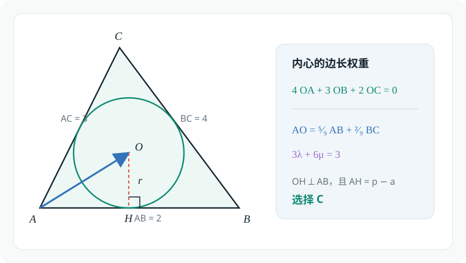<figcaption>例题 6.14 的内心向量模型</figcaption></figure><h3 id="例题-615">例题 6.15</h3><p>（北京大学）已知 <span class="math-expression math-inline" data-math-source="H"></span>&#32;是 <span class="math-expression math-inline" data-math-source="\triangle ABC"></span>&#32;的垂心，且</p><p><span class="math-expression math-display" data-math-source="2\vec{HA}+3\vec{HB}+4\vec{HC}
=\vec{0}," data-math-display></span></p><p>则 <span class="math-expression math-inline" data-math-source="\triangle ABC"></span>&#32;的最大内角的正弦值是 <span class="math-expression math-inline" data-math-source="\underline{\qquad}"></span>。</p><p>对于垂心,三个分三角形面积比为<span class="math-expression math-inline" data-math-source="\tan A,\tan B,\tan C"></span>,故列出奔驰定理: <span class="math-expression math-display" data-math-source="\begin{gathered} \tan A\vec{HA}+\tan B\vec{HB}+\tan C\vec{HC}=\vec{0}\\ \tan A=2k,\tan B=3k,\tan C=4k\\ \tan A\tan B\tan C=\tan A+\tan B+\tan C\\ 24k^3=9k,k=\pm\frac{\sqrt{6}}{4} \end{gathered}" data-math-display></span></p><p>显然,<span class="math-expression math-inline" data-math-source="k=-\frac{\sqrt{6}}{4}"></span>不是合理的结果,应当舍去: <span class="math-expression math-display" data-math-source="\begin{gathered} k=\frac{\sqrt{6}}{4},\frac{\pi}{2}&gt; C&gt; B&gt; A&gt;0\\ \tan C=\sqrt{6},\sin C=\frac{\tan C}{\sqrt{1+\tan^2 C}}=\frac{\sqrt{42}}{7} \end{gathered}" data-math-display></span></p><figure class="prose-figure">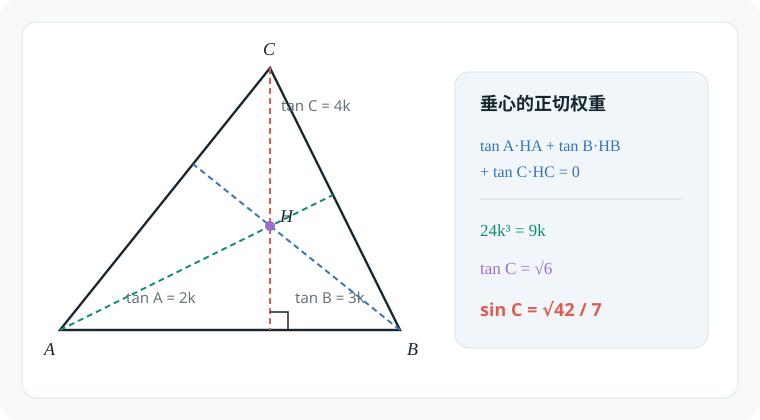<figcaption>例题 6.15 的垂心与正切权重</figcaption></figure><h3 id="例题-616">例题 6.16</h3><p>求证：<span class="math-expression math-inline" data-math-source="\triangle ABC"></span>&#32;的外心 <span class="math-expression math-inline" data-math-source="O"></span>、重心 <span class="math-expression math-inline" data-math-source="G"></span>、垂心 <span class="math-expression math-inline" data-math-source="H"></span>&#32;在同一直线上，且</p><p><span class="math-expression math-display" data-math-source="OG:GH=1:2." data-math-display></span></p><p>在直角三角形中,通过建系可以完成证明:</p><p>在非直角三角形中,综合使用三心的欧拉定理: <span class="math-expression math-display" data-math-source="\begin{gathered} \vec{GA}+\vec{GB}+\vec{GC}=\vec{0}\\ \sin 2A\vec{OA}+\sin 2B\vec{OB}+\sin 2C\vec{OC}=\vec{0}\\ \tan A\vec{HA}+\tan B\vec{HB}+\tan C\vec{HC}=\vec{0}\\ \vec{GA}+(\vec{GA}+\vec{AB})+(\vec{GA}+\vec{AC})=\vec{0}\\ \vec{AG}=\frac{\vec{AB}+\vec{AC}}{3} \end{gathered}" data-math-display></span> 同理可以写出: <span class="math-expression math-display" data-math-source="\begin{gathered} \vec{AO}=\frac{\sin 2B\vec{AB}+\sin 2C\vec{AC}}{\sin 2A+\sin 2B+\sin 2C}\\ \vec{AH}=\frac{\tan B\vec{AB}+\tan C\vec{AC}}{\tan A+\tan B+\tan C} \end{gathered}" data-math-display></span> 接下来计算<span class="math-expression math-inline" data-math-source="\vec{OG},\vec{GH}"></span>: <span class="math-expression math-display" data-math-source="\begin{gathered} \vec{OG}=\vec{AG}-\vec{AO}\\=\frac{\sin 2A-2\sin 2B+\sin 2C}{3(\sin 2A+\sin 2B+\sin 2C)}\vec{AB}+\frac{\sin 2A+\sin 2B-2\sin 2C}{3(\sin 2A+\sin 2B+\sin 2C)}\vec{AC}\\ \vec{GH}=\vec{AH}-\vec{AG}\\ =\frac{2\tan B-\tan A-\tan C}{3(\tan A+\tan B+\tan C)}\vec{AB}+\frac{2\tan C-\tan A-\tan B}{3(\tan A+\tan B+\tan C)}\vec{AC} \end{gathered}" data-math-display></span></p><p>不难看出,只要有<span class="math-expression math-inline" data-math-source="\frac{2(\sin 2A-2\sin 2B+\sin 2C)}{3(\sin 2A+\sin 2B+\sin 2C)}=\frac{2\tan B-\tan A-\tan C}{3(\tan A+\tan B+\tan C)}"></span>即可</p><p><span class="math-expression math-display" data-math-source="\begin{gathered} \frac{2\tan B-\tan A-\tan C}{3(\tan A+\tan B+\tan C)}\\ =\frac{2\tan B-\tan A-\tan C}{3\tan A\tan B\tan C}\\ =\frac{1}{3}(\frac{2}{\tan A\tan C}-\frac{1}{\tan B\tan C}-\frac{1}{\tan A\tan B}) \end{gathered}" data-math-display></span></p><p><span class="math-expression math-display" data-math-source="\begin{gathered} \frac{2(\sin 2A-2\sin 2B+\sin 2C)}{3(\sin 2A+\sin 2B+\sin 2C)}\\ =\frac{2}{3}\cdot\frac{(\sin 2A-2\sin 2B+\sin 2C)}{(\sin 2A+\sin 2B+\sin 2C)}\\ =\frac{2}{3}\cdot\frac{\frac{2\tan A}{1+\tan^2A}-2\frac{2\tan B}{1+\tan^2B}+\frac{2\tan C}{1+\tan^2C}}{\frac{2\tan A}{1+\tan^2A}+\frac{2\tan B}{1+\tan^2B}+\frac{2\tan C}{1+\tan^2C}}\\ =\frac{2}{3}\cdot\frac{\frac{\tan A}{1+\tan^2A}-2\frac{\tan B}{1+\tan^2B}+\frac{\tan C}{1+\tan^2C}}{\frac{\tan A}{1+\tan^2A}+\frac{\tan B}{1+\tan^2B}+\frac{\tan C}{1+\tan^2C}}\\ =\frac{2}{3}\cdot\frac{\tan A(1+\tan^2 B)(1+\tan^2 C)-2\tan B(1+\tan^2 C)(1+\tan^2 A)+\tan C(1+\tan^2 A)(1+\tan^2 B)}{\tan A(1+\tan^2 B)(1+\tan^2 C)+\tan B(1+\tan^2 C)(1+\tan^2 A)+\tan C(1+\tan^2 A)(1+\tan^2 B)}\\ =\frac{1}{3}(\frac{2}{\tan A\tan C}-\frac{1}{\tan B\tan C}-\frac{1}{\tan A\tan B}) \end{gathered}" data-math-display></span></p><p>实际上,不如分离常数: <span class="math-expression math-display" data-math-source="\begin{gathered} \frac{2\tan B-\tan A-\tan C}{3(\tan A+\tan B+\tan C)}\\ =\frac{2}{3}-\frac{\tan A+\tan C}{\tan A+\tan B+\tan C}\\ \frac{2(\sin 2A-2\sin 2B+\sin 2C)}{3(\sin 2A+\sin 2B+\sin 2C)}\\ =\frac{2}{3}-\frac{2\sin 2B}{\sin 2A+\sin 2B+\sin 2C} \end{gathered}" data-math-display></span> 问题转化为证明: <span class="math-expression math-display" data-math-source="\begin{gathered} \frac{\tan A+\tan C}{\tan A+\tan B+\tan C}=\frac{2\sin 2B}{\sin 2A+\sin 2B+\sin 2C}\\ LHS=\frac{\tan A+\tan C}{\tan A\tan B\tan C}\\=\frac{1}{\tan B\tan C}+\frac{1}{\tan A\tan B}\\=1-\frac{1}{\tan A\tan C}\\ RHS=\frac{2\sin 2B}{2\sin(A+C)\cos(A-C)+2\sin B\cos B}\\ =\frac{2\sin 2B}{2\sin B(\cos B+\cos(A-C))}\\ =\frac{2\sin 2B}{2\sin B[-\cos (A+C)+\cos(A-C)]}\\ =\frac{2\sin 2B}{4\sin A\sin B\sin C}\\ =\frac{\sin 2B}{2\sin A\sin B\sin C}\\ =\frac{2\sin B\cos B}{2\sin A\sin B\sin C}\\ =\frac{\cos B}{\sin A\sin C}\\ =\frac{-\cos(A+C)}{\sin A\sin C}\\ =\frac{\sin A\sin C-\cos A\cos C}{\sin A\sin C}=1-\frac{1}{\tan A\tan C} \end{gathered}" data-math-display></span></p><figure class="prose-figure">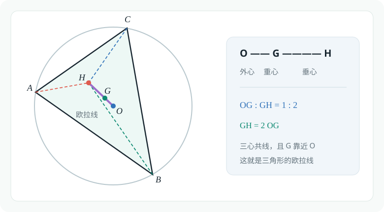<figcaption>例题 6.16 的欧拉线</figcaption></figure><p><picture class="responsive-picture"><source srcset="image.freshmark-f657ca62724e-372w.avif 372w" type="image/avif"><source srcset="image.freshmark-f657ca62724e-372w.webp 372w" type="image/webp">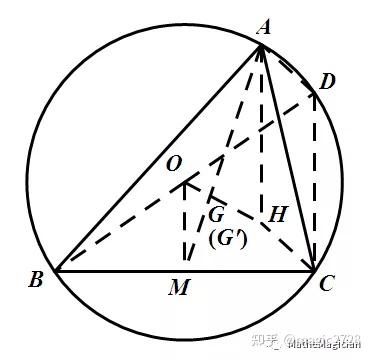</picture></p><p><strong>欧拉线</strong>一个比较标准的平面几何证明是通过同一法实现的:</p><p>如图,点<span class="math-expression math-inline" data-math-source="M"></span>为边<span class="math-expression math-inline" data-math-source="BC"></span>中点,延长<span class="math-expression math-inline" data-math-source="BO"></span>交<span class="math-expression math-inline" data-math-source="\triangle ABC"></span>外接圆于点<span class="math-expression math-inline" data-math-source="D"></span>,由直径所对圆周角为<span class="math-expression math-inline" data-math-source="90^\circ"></span>知:</p><p><span class="math-expression math-display" data-math-source="AD\perp AB,CD\perp BC" data-math-display></span></p><p>同时结合垂心定义<span class="math-expression math-inline" data-math-source="CH\perp AB,AH\perp BC"></span>,知:</p><p><span class="math-expression math-display" data-math-source="AD\parallel CH,AH\parallel CD" data-math-display></span></p><p>根据平行四边形判定法则,四边形<span class="math-expression math-inline" data-math-source="AHCD"></span>是平行四边形,有:</p><p><span class="math-expression math-display" data-math-source="AH=CD" data-math-display></span></p><p>于此同时,点<span class="math-expression math-inline" data-math-source="O,M"></span>分别是线段<span class="math-expression math-inline" data-math-source="BD,BC"></span>的中点,由中位线定理知<span class="math-expression math-inline" data-math-source="CD=2OM"></span>:</p><p><span class="math-expression math-display" data-math-source="AH=2OM" data-math-display></span></p><p>根据外心定义,<span class="math-expression math-inline" data-math-source="OM\perp BC"></span>,结合<span class="math-expression math-inline" data-math-source="AH\perp BC"></span>有:</p><p><span class="math-expression math-display" data-math-source="OM\parallel AH" data-math-display></span></p><p>连接<span class="math-expression math-inline" data-math-source="AM"></span>,交线段<span class="math-expression math-inline" data-math-source="OM"></span>于点<span class="math-expression math-inline" data-math-source="G&#39;"></span>,由平行线所截分线段成比例知:</p><p><span class="math-expression math-display" data-math-source="\frac{AG&#39;}{G&#39;M}=\frac{G&#39;H}{G&#39;O}=\frac{AH}{OM}=2" data-math-display></span></p><p>这表明,点<span class="math-expression math-inline" data-math-source="G&#39;"></span>是三角形<span class="math-expression math-inline" data-math-source="\triangle ABC"></span>中<span class="math-expression math-inline" data-math-source="BC"></span>边上中线上,靠近<span class="math-expression math-inline" data-math-source="BC"></span>边的三等分点,也就是重心<span class="math-expression math-inline" data-math-source="G"></span>.</p><p>并且,<span class="math-expression math-inline" data-math-source="2=\frac{G&#39;H}{G&#39;O}=\frac{GH}{GO}"></span>,Q.E.D</p><h3 id="例题-617">例题 6.17</h3><p>如图，<span class="math-expression math-inline" data-math-source="\triangle ABC"></span>&#32;的两条高线 <span class="math-expression math-inline" data-math-source="AD"></span>，<span class="math-expression math-inline" data-math-source="BE"></span>&#32;交于点 <span class="math-expression math-inline" data-math-source="H"></span>，其外接圆圆心为 <span class="math-expression math-inline" data-math-source="O"></span>。过点 <span class="math-expression math-inline" data-math-source="O"></span>&#32;作 <span class="math-expression math-inline" data-math-source="OF\perp BC"></span>，垂足为 <span class="math-expression math-inline" data-math-source="F"></span>，直线 <span class="math-expression math-inline" data-math-source="OH"></span>&#32;与 <span class="math-expression math-inline" data-math-source="AF"></span>&#32;相交于点 <span class="math-expression math-inline" data-math-source="G"></span>，则 <span class="math-expression math-inline" data-math-source="\triangle OFG"></span>&#32;与 <span class="math-expression math-inline" data-math-source="\triangle GAH"></span>&#32;的面积之比为 <span class="math-expression math-inline" data-math-source="\underline{\qquad}"></span>。</p><figure class="prose-figure"><picture class="responsive-picture"><source srcset="example-6-17.freshmark-af5e875a7379-390w.avif 390w" type="image/avif"><source srcset="example-6-17.freshmark-af5e875a7379-390w.webp 390w" type="image/webp">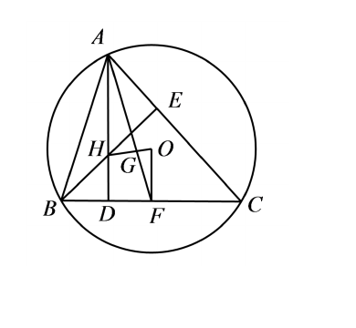</picture><figcaption>例题 6.17 几何示意图</figcaption></figure><p>由欧拉线经典结论:<span class="math-expression math-inline" data-math-source="2OG=GH"></span>知:<span class="math-expression math-inline" data-math-source="\triangle OFG"></span>和<span class="math-expression math-inline" data-math-source="\triangle GAH"></span>相似比为<span class="math-expression math-inline" data-math-source="1:2"></span>,则面积比为<span class="math-expression math-inline" data-math-source="1:4"></span></p><h2 id="内积不等式与高维视角">内积不等式与高维视角</h2><h3 id="例题-618">例题 6.18</h3><p>用向量方法证明：对于任意的 <span class="math-expression math-inline" data-math-source="a,b,c,d\in\mathbb R"></span>，恒有不等式</p><p><span class="math-expression math-display" data-math-source="(ac+bd)^2\leq(a^2+b^2)(c^2+d^2)." data-math-display></span></p><p>设向量<span class="math-expression math-inline" data-math-source="\vec{u}=(a,b),\vec{v}=(c,d)"></span>,则: <span class="math-expression math-display" data-math-source="\begin{gathered} \vec{u}\cdot\vec{v}\leq |\vec{u}||\vec{v}|\\ (ac+bd)^2\leq(a^2+b^2)(c^2+d^2) \end{gathered}" data-math-display></span> 当且仅当<span class="math-expression math-inline" data-math-source="\vec{u}\parallel\vec{v}"></span>时等号成立.</p><figure class="prose-figure">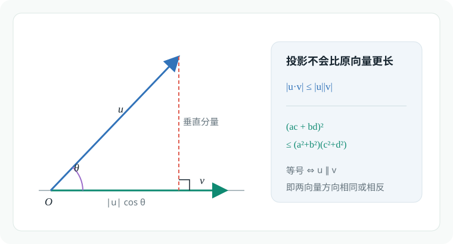<figcaption>例题 6.18 的柯西不等式几何图</figcaption></figure><h3 id="例题-619">例题 6.19</h3><p>（清华大学）已知向量</p><p><span class="math-expression math-display" data-math-source="\vec{a}=(0,1),
\qquad
\vec{b}=\left(-\frac{\sqrt3}{2},-\frac12\right),
\qquad
\vec{c}=\left(\frac{\sqrt3}{2},-\frac12\right)," data-math-display></span></p><p>且</p><p><span class="math-expression math-display" data-math-source="x\vec{a}+y\vec{b}+z\vec{c}=(1,1)," data-math-display></span></p><p>则 <span class="math-expression math-inline" data-math-source="x^2+y^2+z^2"></span>&#32;的最小值为（　　）</p><p>A. <span class="math-expression math-inline" data-math-source="1"></span></p><p><strong>B. <span class="math-expression math-inline" data-math-source="\frac43"></span></strong></p><p>C. <span class="math-expression math-inline" data-math-source="\frac32"></span></p><p>D. <span class="math-expression math-inline" data-math-source="2"></span></p><p>容易知道变量间的依赖关系:两个自由度,<span class="math-expression math-inline" data-math-source="y,z"></span>确定后<span class="math-expression math-inline" data-math-source="x"></span>唯一确定. <span class="math-expression math-display" data-math-source="\begin{gathered} -\frac{\sqrt3}{2}y+\frac{\sqrt3}{2}z=1\\ x-\frac{y}{2}-\frac{z}{2}=1\\ x=\frac{y+z}{2}+1,z-y=\frac{2\sqrt3}{3}\\ \Longrightarrow x=y+\frac{\sqrt{3}+3}{3}\\ x^2+y^2+z^2\\ =(y+\frac{\sqrt{3}+3}{3})^2+y^2+(y+\frac{2\sqrt{3}}{3})^2\\ =3y^2+2(\sqrt{3}+1)y+\frac{24+6\sqrt{3}}{9}\\ \geq\frac{4}{3} \end{gathered}" data-math-display></span></p><p>尊重<span class="math-expression math-inline" data-math-source="y,z"></span>内禀的对称性,可以简化计算: <span class="math-expression math-display" data-math-source="\begin{gathered} \begin{cases} z=t+\frac{\sqrt{3}}{3},\\ y=t-\frac{\sqrt{3}}{3} \end{cases}\\ x=t+1\\ x^2+y^2+z^2\\ =(t+1)^2+(t+\frac{\sqrt{3}}{3})^2+(t-\frac{\sqrt{3}}{3})^2\\ =3t^2+2t+\frac{5}{3}\geq\frac{4}{3} \end{gathered}" data-math-display></span></p><p>考虑几何性质:点<span class="math-expression math-inline" data-math-source="A(x,y,z)"></span>在空间中的轨迹为一条方向向量为<span class="math-expression math-inline" data-math-source="(1,1,1)"></span>的直线<span class="math-expression math-inline" data-math-source="l"></span>,则当<span class="math-expression math-inline" data-math-source="OA\perp l"></span>时,<span class="math-expression math-inline" data-math-source="x^2+y^2+z^2=OA^2"></span>取得最小值:</p><p><span class="math-expression math-display" data-math-source="\begin{gathered} (x,y,z)\cdot(1,1,1)=0\\ x+y+z=0\\ 3t+1=0\\ t=-\frac{1}{3}\\ \begin{cases} x=\frac{2}{3},\\ y=\frac{\sqrt{3}-1}{3}\\ z=\frac{-\sqrt{3}-1}{3} \end{cases} \end{gathered}" data-math-display></span></p><figure class="prose-figure">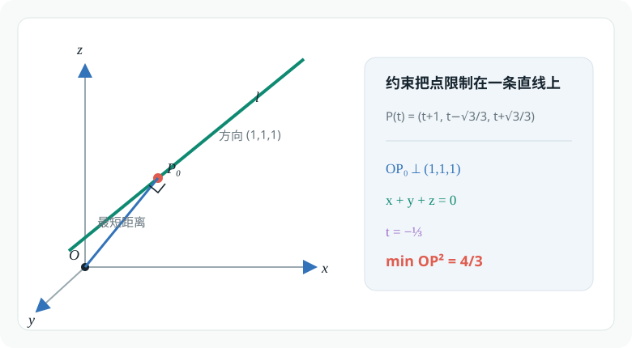<figcaption>例题 6.19 的三维直线最短距离模型</figcaption></figure><h3 id="例题-620">例题 6.20</h3><p>（清华大学）已知 <span class="math-expression math-inline" data-math-source="\vec{a}"></span>，<span class="math-expression math-inline" data-math-source="\vec{b}"></span>&#32;为平面上的单位向量，<span class="math-expression math-inline" data-math-source="|\vec{c}|=\sqrt{26}"></span>，且 <span class="math-expression math-inline" data-math-source="\vec{a}\cdot\vec{c}=1"></span>，则</p><p><span class="math-expression math-display" data-math-source="|\vec{a}\cdot\vec{b}|+|\vec{b}\cdot\vec{c}|" data-math-display></span></p><p>的最大值为 <span class="math-expression math-inline" data-math-source="\underline{\qquad}"></span>。</p><p><span class="math-expression math-display" data-math-source="\begin{gathered} |\vec{a}\cdot\vec{b}|+|\vec{b}\cdot\vec{c}|\\ =|\vec{b}|(|\vec{a}||\cos\langle\vec{a},\vec{b}\rangle|+|\vec{c}||\cos\langle\vec{c},\vec{b}\rangle|)\\ =|\cos\langle\vec{a},\vec{b}\rangle|+\sqrt{26}|\cos\langle\vec{c},\vec{b}\rangle| \end{gathered}" data-math-display></span> 根据对称性知,最大值在<span class="math-expression math-inline" data-math-source="\langle\vec{a},\vec{b}\rangle,\langle\vec{c},\vec{b}\rangle&lt;\frac{\pi}{2}"></span>时取得.</p><p><span class="math-expression math-display" data-math-source="\begin{gathered} \cos\theta+\sqrt{26}\cos(\langle\vec{a},\vec{c}\rangle-\theta)\\ =\cos\theta+\sqrt{26}(\cos\langle\vec{a},\vec{c}\rangle\cos\theta+\sin\langle\vec{a},\vec{c}\rangle\sin\theta)\\ =\cos\theta+\sqrt{26}(\frac{1}{\sqrt{26}}\cos\theta+\frac{5}{\sqrt{26}}\sin\theta)\\ =2\cos\theta+5\sin\theta\leq\sqrt{29} \end{gathered}" data-math-display></span></p><p>或者,引入参数<span class="math-expression math-inline" data-math-source="\lambda,\mu"></span>以取去绝对值: <span class="math-expression math-display" data-math-source="\begin{gathered} |\vec{a}\cdot\vec{b}|+|\vec{b}\cdot\vec{c}|\\ =\lambda \vec{a}\cdot\vec{b}+\mu \vec{b}\cdot\vec{c}\\ =\vec{b}\cdot(\lambda \vec{a}+\mu\vec{c})\\ \leq |\vec{b}||\lambda \vec{a}+\mu\vec{c}|\\ =\max\{|\vec{a}-\vec{c}|,|\vec{a}+\vec{c}|\}=\sqrt{29} \end{gathered}" data-math-display></span></p><figure class="prose-figure">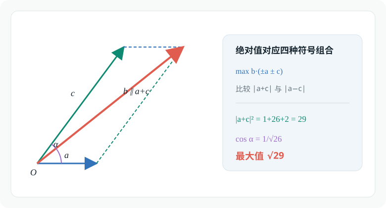<figcaption>例题 6.20 的向量合成模型</figcaption></figure><h3 id="例题-621">例题 6.21</h3><p>已知 <span class="math-expression math-inline" data-math-source="\vec{a}"></span>，<span class="math-expression math-inline" data-math-source="\vec{b}"></span>，<span class="math-expression math-inline" data-math-source="\vec{c}"></span>&#32;为单位向量，且</p><p><span class="math-expression math-display" data-math-source="|3\vec{a}-5\vec{b}|=7," data-math-display></span></p><p>则</p><p><span class="math-expression math-display" data-math-source="|2\vec{a}-\vec{c}|+|\vec{b}-2\vec{c}|" data-math-display></span></p><p>的最小值为（　　）</p><p>A. <span class="math-expression math-inline" data-math-source="2"></span></p><p><strong>B. <span class="math-expression math-inline" data-math-source="2\sqrt3"></span></strong></p><p>C. <span class="math-expression math-inline" data-math-source="4"></span></p><p>D. <span class="math-expression math-inline" data-math-source="6"></span></p><p>核心在于消去<span class="math-expression math-inline" data-math-source="\vec{c}"></span>,这里需要一个交换系数的帽子戏法:</p><p>注意到: <span class="math-expression math-display" data-math-source="\begin{gathered} |\vec{b}-2\vec{c}|^2=5-4\vec{b}\cdot\vec{c}\\ |-2\vec{b}+\vec{c}|^2=5-4\vec{b}\cdot\vec{c} \end{gathered}" data-math-display></span></p><p>同理<span class="math-expression math-inline" data-math-source="|2\vec{a}-\vec{c}|=|-\vec{a}+2\vec{c}|"></span>&#32;<span class="math-expression math-display" data-math-source="\begin{gathered} |2\vec{a}-\vec{c}|+|\vec{b}-2\vec{c}|\\ =|2\vec{a}-\vec{c}|+|-2\vec{b}+\vec{c}|\\ \geq 2|\vec{a}-\vec{b}|\ \end{gathered}" data-math-display></span></p><p><span class="math-expression math-display" data-math-source="\begin{gathered} |2\vec{a}-\vec{c}|+|\vec{b}-2\vec{c}|\\ =|-\vec{a}+2\vec{c}|+|\vec{b}-2\vec{c}|\\ \geq |\vec{b}-\vec{a}| \end{gathered}" data-math-display></span></p><p>显然,<span class="math-expression math-inline" data-math-source="2|\vec{b}-\vec{a}|"></span>是下界.</p><p><span class="math-expression math-display" data-math-source="\begin{gathered} |3\vec{a}-5\vec{b}|=7\\ 34-30\vec{a}\cdot\vec{b}=49\\ \vec{a}\cdot\vec{b}=-\frac{1}{2}\\ |\vec{b}-\vec{a}|^2=2-2\vec{a}\cdot\vec{b}=3\\ |2\vec{a}-\vec{c}|+|\vec{b}-2\vec{c}|\\ \geq 2|\vec{b}-\vec{a}|=2\sqrt{3} \end{gathered}" data-math-display></span></p><p>验证取等条件: <span class="math-expression math-display" data-math-source="\begin{gathered} 2\vec{a}-\vec{c}=\lambda(-2\vec{b}+\vec{c}),\lambda&gt;0\\ \vec{c}=2\frac{\vec{a}+\lambda\vec{b}}{\lambda+1}\\ |\vec{c}|^2=4[(\frac{|\vec{a}|}{\lambda+1})^2+\frac{2\lambda}{(\lambda+1)^2}\vec{a}\cdot\vec{b}+(\frac{\lambda|\vec{b}|}{\lambda+1})^2]\\ =4[\frac{1}{(\lambda+1)^2}-\frac{\lambda}{(\lambda+1)^2}+\frac{\lambda^2}{(\lambda+1)^2}]=1\\ 4(\lambda^2-\lambda+1)=(\lambda+1)^2\\\\ (\lambda-1)^2=0\Longleftrightarrow \lambda=1 \end{gathered}" data-math-display></span></p><figure class="prose-figure">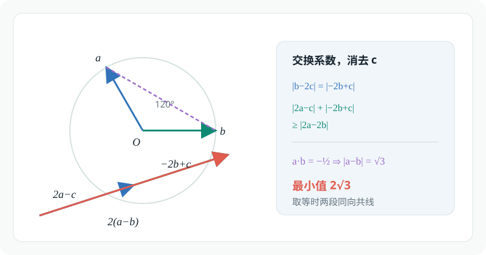<figcaption>例题 6.21 的交换系数与三角不等式</figcaption></figure><h3 id="例题-622">例题 6.22</h3><p>已知 <span class="math-expression math-inline" data-math-source="\triangle ABC"></span>&#32;满足</p><p><span class="math-expression math-display" data-math-source="\frac{3\vec{AB}}{|\vec{AB}|}
+\frac{2\vec{AC}}{|\vec{AC}|}
=\frac{\sqrt{19}\left(\vec{AB}+\vec{AC}\right)}
{\left|\vec{AB}+\vec{AC}\right|}," data-math-display></span></p><p>点 <span class="math-expression math-inline" data-math-source="D"></span>&#32;为线段 <span class="math-expression math-inline" data-math-source="AB"></span>&#32;上一动点。若</p><p><span class="math-expression math-display" data-math-source="\vec{DA}\cdot\vec{DC}" data-math-display></span></p><p>的最小值为 <span class="math-expression math-inline" data-math-source="-3"></span>，则 <span class="math-expression math-inline" data-math-source="\triangle ABC"></span>&#32;的面积 <span class="math-expression math-inline" data-math-source="S=\underline{\qquad}"></span>。</p><p>考虑两向量相等的必要条件:模长相等 <span class="math-expression math-display" data-math-source="\begin{gathered} \frac{3\vec{AB}}{|\vec{AB}|} +\frac{2\vec{AC}}{|\vec{AC}|} =\frac{\sqrt{19}\left(\vec{AB}+\vec{AC}\right)} {\left|\vec{AB}+\vec{AC}\right|}\\ \Longrightarrow 9+4+12\frac{\vec{AB}}{|\vec{AB}|}\cdot\frac{\vec{AC}}{|\vec{AC}|}=19\\ \cos\langle\vec{AB},\vec{AC}\rangle=\frac{1}{2}\\ \Longleftrightarrow \langle\vec{AB},\vec{AC}\rangle=\frac{\pi}{3} \end{gathered}" data-math-display></span></p><p>再考虑系数对应相同:平面向量基本定理 <span class="math-expression math-display" data-math-source="\begin{gathered} \frac{3}{|\vec{AB}|}=\frac{\sqrt{19}}{|\vec{AB}+\vec{AC}|}=\frac{2}{|\vec{AC}|}\\ |\vec{AB}|=3k,|\vec{AC}|=2k \end{gathered}" data-math-display></span></p><p>紧接着,用极化恒等式化简条件<span class="math-expression math-inline" data-math-source="\vec{DA}\cdot\vec{DC}"></span>:取<span class="math-expression math-inline" data-math-source="AC"></span>中点<span class="math-expression math-inline" data-math-source="M"></span>,作<span class="math-expression math-inline" data-math-source="DH\perp AB"></span>于点<span class="math-expression math-inline" data-math-source="H"></span>. <span class="math-expression math-display" data-math-source="\begin{gathered} \vec{DA}\cdot\vec{DC}\\ =\vec{DM}^2-\vec{MA}^2\\ =|DM|^2-k^2\\ \geq |HM|^2-k^2=(\frac{\sqrt{3}}{2}k)^2-k^2=-\frac{1}{4}k^2=-3\\ \Longrightarrow k^2=12 \end{gathered}" data-math-display></span></p><p>进而得到<span class="math-expression math-inline" data-math-source="S=\frac{1}{2}AB\cdot AC\sin\frac{\pi}{3}=\frac{3\sqrt{3}}{2}k^2=18\sqrt{3}"></span></p><figure class="prose-figure">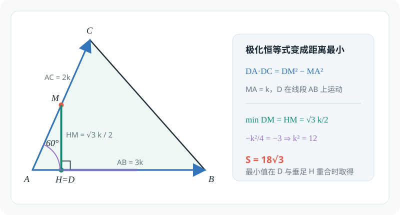<figcaption>例题 6.22 的中点与最短距离模型</figcaption></figure></article></div><section class="container comments" data-comments data-comments-path="/posts/math/2027-strong-foundation-plan/09-plane-vectors/"><div class="comments-head"><div><p class="eyebrow">评论</p><h2 data-comments-title>评论</h2></div><p>登录后参与讨论。注册时只需验证一次邮箱。</p></div><div class="comment-list" aria-live="polite" data-comment-list><p class="comment-state" data-comment-state>正在加载评论…</p></div><button type="button" class="comment-more" data-comments-more hidden>加载更早的评论</button><div class="comment-auth" data-comment-auth><p class="comment-auth-status" data-auth-loading>正在检查登录状态…</p><div hidden data-auth-guest><form class="comment-auth-form" data-auth-login><h3>登录后评论</h3><label>邮箱<input autocomplete="email" name="email" maxlength="254" required type="email"></label><label>密码<input autocomplete="current-password" name="password" maxlength="128" required type="password"></label><div class="comment-form-foot"><p class="comment-form-status" role="status" data-auth-login-status></p><button type="submit">登录</button></div></form><details class="comment-register"><summary>还没有账号？注册</summary><form class="comment-auth-form" data-auth-register><label>昵称<input autocomplete="name" name="name" maxlength="40" required></label><label>邮箱<input autocomplete="email" name="email" maxlength="254" required type="email"></label><label>密码<input autocomplete="new-password" name="password" maxlength="128" required type="password" minlength="8"></label><p class="comment-auth-hint">至少 8 个字符。</p><div class="comment-form-foot"><p class="comment-form-status" role="status" data-auth-register-status></p><button type="submit">注册</button></div></form></details></div><form class="comment-auth-form" hidden data-auth-verify><p>验证码已发送到邮箱，请在 10 分钟内完成注册。</p><label>六位验证码<input autocomplete="one-time-code" name="code" maxlength="6" required minlength="6" inputmode="numeric" pattern="[0-9]{6}"></label><div class="comment-form-foot"><p class="comment-form-status" role="status" data-auth-verify-status></p><button type="submit">完成注册</button></div></form><div class="comment-auth-user" data-auth-user hidden><p>当前登录： <strong data-auth-user-name></strong> <span data-auth-user-email></span></p><button type="button" data-auth-logout>退出登录</button></div></div><form class="comment-form" hidden data-comment-form><label>评论内容<textarea maxlength="2000" minlength="2" name="body" placeholder="写下你的想法…" required rows="5"></textarea></label><p class="comment-markdown-hint">支持 Markdown：加粗、链接、引用、列表和代码。</p><label aria-hidden="true" class="comment-honeypot">Website<input autocomplete="off" name="website" tabindex="-1"></label><div class="comment-form-foot"><p class="comment-form-status" role="status" data-comment-form-status></p><button type="submit" data-comment-submit>发表评论</button></div></form></section></main>